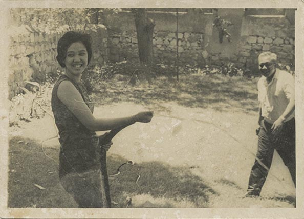

about
By 1886, the British East India Company had expanded to include
most of Burma, annexing it to India. Burma later became a separate
colony in 1937 until 1942, when it fell under Japanese occupation.
This 60 year period saw the opening of many photographic studios
throughout major cities and formed the start of local photographic
culture by professionals as well as in private homes. The Japanese
surrendered in 1945 and Burma became independent in 1948. The
colonial "exoticism" photography with the usage of painted jungle
backdrops and posing Burmese in traditional dress changed swiftly
following independence. Professional portrait studios were in very
high demand in the 1950s and 60s for sittings of a wide spectrum of
Myanmar's society. In 1962, left-wing general Ne Win staged a coup,
banned political opposition, suspended the constitution, and
introduced the "Burmese way of socialism." The change of
government and political agenda forced foreigners out of the country.
This also affected photography as most of the studios until the 1950s
where run by Europeans or, more often, Indians. The rapid decline of
Indian-runstudios made room for many Chinese photographers to take
over the industry. Restrictions for photography, especially journalistic
ones, also factored in the history of recorded images in Myanmar.
Read more about the history of photography here.
Myanmar Photo Archive is a physical archive of photographic materials from Myanmar. The materials range from studio portraiture, private photo albums, official photography, company records, scientific research photography, documentary images as well as studio accessories, slides and negatives. The archive aims to create a comprehensive record of photographic materials and culture and provide historic context to the materials within the archive. Currently, the earliest images are from 1890 and range until the present decade.
There is great urgency in collecting the rapidly disappearing
original materials as well as trying to understand
photographic culture from those practitioners who remain to
tell the stories of their work before digital times.
MPA is only at its starting point in the exploration of the many
different areas of photography, collecting professional records
as well as private photography. The MPA website provides an
insight into photographic history in Myanmar and publishers
regularly featured articles on visual culture.
MPA is a private endeavour initiated by Austrian artist Lukas
Birk. He previously worked on archiving the history of box
camera photography in Afghanistan (Afghan Box Camera
Project) and founded arts programs in China and Indonesia
(SewonArtSpace / ASAP).
For more information please contact us here
